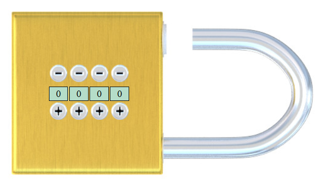
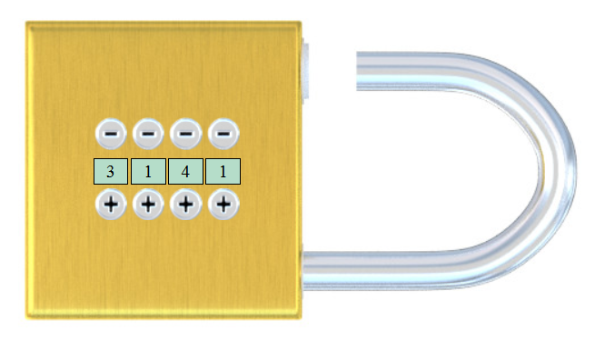
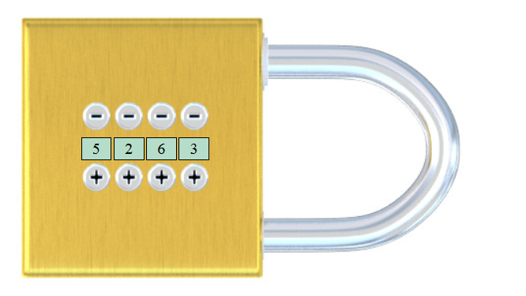

Le site WEB à réaliser simule un cadenas à combinaison. Lorsque le cadenas est ouvert. l'utilisateur peut régler la combinaison secrète (celle qui permet d'ouvrir le cadenas) grâce aux touches "+" et "-". Le cadenas se referme lorsqu'on clique dessus et ne se réouvre que lorsqu'on réaffiche la combinaison secrète (toujours grâce aux touches "+" et "-").
|
L'utilisateur arrive sur le site avec un cadenas ouvert qui affiche la combinaison "0 0 0 0" :
 L'utilisateur peut cliquer sur les touches "+" et les touches "-" pour changer les chiffres ... |
... afin de régler la combinaison secrète souhaitée (les chiffres varient de 0 à 9).
 Lorsque la combinaison secrète souhaitée est affichée, le joueur clique sur le cadenas ... |
... qui se referme. L'utilisateur peut alors modifier les chiffres affiché (toujours en cliquant sur les touches "+" et les touches "-").
 Le cadenas doit resté fermé jusqu'à ce que ... |
... la combinaison secrète soit à nouveau affichée. Le cadenas est alors à nouveau ouvert.
Après avoir ou non changé la combinaison secrète, l'utilisateur peut alors refermer le cadenas ... etc |
|
Par exemple, lorsque le cadenas est dans cet état ...
|
... le fichier "cadenas.json" contient :
{
"secret" : [ 9, 8, 7, 6 ],
"actuel" : [ 3, 1, 4, 1 ],
"etat" : "o"
}
|
{
"secret" : [ 0, 0, 0, 0 ],
"actuel" : [ 0, 0, 0, 0 ],
"etat" : "o"
}
... puis affiche le cadenas conformément au contenu de ce fichier, c'est à dire en position ouverte avec la combinaison positionnée sur 0 0 0 0.
L'état du cadenas (propriété "etat") est ensuite éventuellement modifié :
Le cadenas est ensuite affiché selon les informations du fichier "cadenas.json", c'est à dire en position fermée avec une combinaison affichée correspondant à la propriété "actuel".
wget http://itinet.fr/thire/cadenas/sources.zip unzip sources.zip
Les images du cadenas et des touches "+" et "-":
cadenas_ouvert.jpg cadenas_ferme.jpg plus.png moins.pngLes fichiers sources js (vides !) :
cadenas.js (le script principal) req_commencer.js req_fermer.js req_static.js req_erreur.jsLe modèle HTML de la (seule) page du site que vous devez modifier et compléter pour y inclure les marqueurs et les balises nécessaires :
cadenas.html
ATTENTION : NE CRÉEZ AUCUN AUTRE FICHIER ! (hormis le fichier "cadenas.json" créé automatiquement par la requête "req_commencer.js")
upload